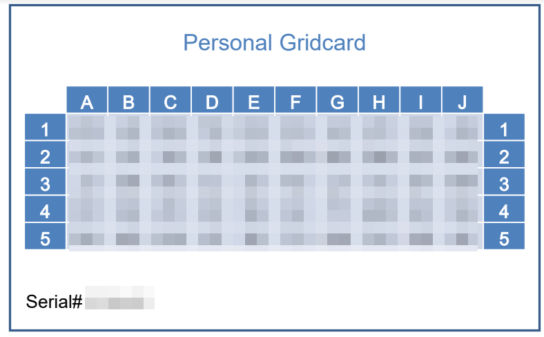
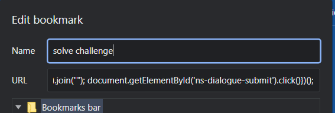

Grid Card to JS bookmark v0.1 by Alex360
This tool converts an image of your gridcard to a javascript bookmark that
resolves the grid card challenge automatically for you.
Report issues at
https://github.com/AlxndrJhn/gridcard_to_js/issues
How to use
- Upload an image of your grid card like the example below
- Note: it is important that the image has the frame
- Note: the character recognition might fail.
- On upload a script at the bottom should appear
- Copy the script and create a bookmark with the script as the URL
-
After you entered your password, click the bookmark to resolve the grid
card challenge automatically

Cropped section, only the content of the rows and collumns should appear
here
Bookmark code to solve Gridcard challenge:
Creating a bookmark in Chrome looks like this
